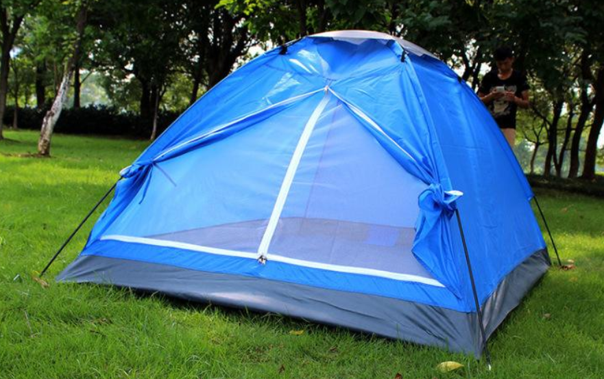

chapter12.1--handout
Background Information
Lord Chesterfield（查斯特菲尔德 勋爵）
查斯特菲尔德勋爵一生著作颇多，最有名的是他集几十年的心血，写给儿子菲利普・斯坦霍普及教子的信《查斯特菲尔德勋爵给儿子的信》。
( Letters to His Son on the Art of Becoming a Man of the World and a Gentleman. )
牛津大学出版社（Oxford University Press, OUP）是将其列入该社《世界经典》之一。这本书世世代代流行于英国上流社会，被誉为绅士们的“教科书”。
forest park（森林公园）
文章中提到了卡叔和Rex都很喜欢的景色自然，空气清新的森林公园 ( forest park) .
美国有很多保护完好，风景优美的国家公园。
比如我们都听说过的科罗拉多大峡谷 ( The Grand Canyon) .
有最活跃的活火山（active volcano）和最大的天文观测台（Astronomical observatory）的夏威夷火山国家公园 （Hawaii Volcanoes National Park）.
每天仅发二十张通行许可证（permits）的波浪谷（The Wave) .
获得进入波浪谷的许可有两种方式：网上抽签（online）或现场抽签（walk—in）.
美国土地管理局（Bureau of Land Management）网站对波浪谷许可证申请设计了一个类似彩票程序（Lottary Application），游客前四个月提交申请。
这样的方式听起来很刺激，抽中签犹如彩票中奖啊~
Vocabulary
meekly
💧adv. in a humble manner
副词：温顺地,柔和地,忠厚地
💧Most have meekly accepted such advice.
大多数人已经顺从地接受了这个建议。
snag
💧n. a sharp protuberance
名词：障碍；突出物
💧[SYN] difficulty；hinder
💧The only snag is the price.
唯一的问题是价格。
remonstrate
💧v. argue in protest or opposition
动词： 抗议，反对
💧[SYN] object；protest a gainst sth
💧He remonstrated with the referee.
他向裁判抗议。
gracious
💧adj. characterized by charm, good taste, and generosity of spirit
形容词：高尚的；和蔼的
💧[SYN]benignant；courteous
💧He was an extremely gracious host.
他是个非常和蔼的主人。
estrange
💧v.arouse hostility or indifference in where there had formerly been love, affection, or friendliness
动词：使疏远；离间
💧[SYN]alienate
💧He was increasingly estranged from his mother.
他与母亲的关系日益疏远了。
Crush Your Problems
- This unspoiled woodland was called Forest Park-and it was a forest, probably not much different in appearance from what it was when Columbus discovered America.
句意：这个森林公园一直保持着原始状态，恐怕和哥伦布发现美洲时的情形差不多。
💧 unspoiled 在这里肯定不是“没被宠坏的”，而是“未损坏的” 也可以理解为“天然的，原始的”。
e.g.The port is quiet and unspoiled.
这个港口宁静、天然。
💧appearance：外貌，外观
e.g.The car is not bad in appearance.
这辆小车外表看起来还不赖。
💧提到“外表”，我们最熟悉的莫过于“looks”，两者什么区别呢？
Looks的意思是美貌，美丽，漂亮，而appearance的意思是一个人的外表，食物的外观，没有美丽的这样的延伸意义。
比如：
good looks：美貌
lose your looks：容颜衰老
e.g. Fiona's got everything—looks, money and youth.
菲奥纳什么都有了——美貌，金钱和青春。 - I was in for it. I knew it. So I didn't wait until the policeman started talking. I beat him to it.
句意：我必然会受罚，对于这一点我心知肚明。所以没等警察开始教训我，我抢先开口。
💧be in for it：势必受罚; 难免受罚，还可以理解为中国的一个成语“骑虎难下”。
e.g.He will be in for it if he doesn't get home on time.
他如果不准时回家，难免受罚。
💧beat ... to it：抢在某人之前；捷足先登
e.g.I was about to take the last cake,but he beat me to it.
我正要拿那最后一块饼,却给他抢先一步。
大家看到这个表达时，千万不要被MJ的那首名曲Beat It 洗脑哦~
💧beat it ：在美国俚语中是“逃避，逃跑”的意思。这里理解为“逃避”比较合适。
整首歌节奏感强劲，让人误以为“just beat it just beat it”是叫热血青年来催战。但其实这首歌是反应年轻人的冲动而导致美国的一些暴力现状，MJ想说明这个现象，让这些热血青年冷静处世。
- The chances are a hundred to one that a generous, forgiving attitude will be taken and your mistakes will be minimized just as the mounted policeman did with me and Rex.
💧a hundred to one：字面意思是“一百比一”，表示 “可能性极大”。
💧minimized：使减少；使缩到最小
e.g. Click the square icon again to minimize the window.
再次点击正方形图标，把窗口最小化。
Content Analysis
之前的章节里我们学习了如何避免冲突，少树敌人。但如果有人要责怪你，怎么做才能化解矛盾呢？
本章节开头非常赏心悦目，卡叔和他可爱的波士顿斗牛犬一起在景色有优美的林中散步，林子里鲜少有人出现，所以卡叔没有给小猎犬Rex系链子和带口罩。
（Since we rarely met anyone in the park, I took Rex along without a leash or a muzzle.）
第一次碰到森林巡警时，警察为了显示自己的权威，呵斥卡叔和他的狗，尽管在警察面前很小心的保证了下次会注意，卡叔和小狗都不喜欢口罩，想碰碰运气。
（But Rex didn't like the muzzle, and neither did I; so we decided to take a chance. ）
不凑巧的是，有一天Rex在林子里撒欢的时候正好撞见之前那位警察巡逻，卡叔知道自己必然会受罚，所以没等警察开始教训，就抢先开口。
（I was in for it. I knew it. So I didn't wait until the policeman started talking. I beat him to it.）
他很虚心的承认了自己的错误，之前一脸严肃的警察这次竟然给卡叔和Rex开了绿灯。前后反差的原因很简单，卡叔承认了警察的权威，承认了自己的错误，一个小危机就这样化解了。
（ I admitted that he was absolutely right and I was absolutely wrong.）
这样看来，如果受指责是不可避免的，不妨主动承认错误。自我批评要比受别人指责好受的多。
（If we know we are going to be rebuked anyhow, isn't it far better to beat the other person to it and do it ourselves? Isn't it much easier to listen to self-criticism than to bear condemnation from alien lips?）
这个道理看起来很简单，但对于很多人，尤其是比较传统的东方人来说，接受起来要多花一段时间。香港的一位中年先生很多年来都和儿子关系不和。
（He had one middle-aged class member who had been estranged from his son for many years.）
在中国传统中，长辈不能先低头，父亲觉得儿子有义务先来求和。
（ In Chinese tradition an older person cannot take the first step. The father felt that it was up to his son to take the initiative toward a reconciliation.）
但是最后一堂课上，这位很固执的父亲终于明白过来卡叔这个道理：假如你错了，立刻诚心诚意地承认。
（If you are wrong, admit it quickly and emphatically.）
他最终和儿子重归于好。
国知名作家埃尔伯特.贺巴德就做的比较好。如读者被他的文章激怒，写信咒骂他时，他巧妙的回信，化敌为友。
（turned his enemies into friends）
所以本章的结尾，卡叔呼吁大家，当错的是我们，我们要及时真心诚意地承认我们的错误。
（Let's admit our mistakes quickly and with enthusiasm.）
不管此时的你愿不愿意相信，在这种情况下，承认自己应当承担的那部分错误，远比努力为自己辩解，要更有意思的多。
（Not only will that technique produce astonishing results; but, believe it or not, it is a lot more fun, under the circumstances, than trying to defend oneself.）
Today's Bonus
最近几年，越来越多的中国人开始尝试更多的游玩方式。和朋友去视野开阔，风景优美的水边野炊，自驾去遥远的地方看一看，还有人开始尝试露营。
作为新手如果想去户外露营，应该如何准备呢？
Tip 1 寻找一个设备比较齐全的露营地
确定野营位置前，了解清楚每个位置的人数和车辆大小数目限制，挑选设施条件更齐全的露营地(campground).
比如有配备饮用水(drinking water)，生火坑(fire pit)，野餐桌(picnic table)，冲水厕所(flush toilet)，热水淋浴(hot showers)，可以当场买木柴和冰(firewood/ice).
对于新手来说会容易上手很多，体验也会更好。
Tip 2 选择相对实用耐用的露营用品
第一次去露营要入手不少新装备，花费支出通常会多些，一定要选择新人友好的用品，在户外野营，实用耐用才是王道。
💧帐篷（Tent）
野外露营除非是租住小木屋（cabin），否则帐篷是不可或缺的装备。
每个帐篷上面都有标明适合多少个人，但这个数字只能说明帐篷的空间适合多少人睡在里面，而不放任何行李。
通常不做背包客，用车载行李去露营的话，想住得舒服又方便就得要选大一些的。
例如如果打算一家四口入住，选择六人帐篷会更好。
夏天用的话要注重帐篷的透气性能（air permeability），例如有纱窗（screen window ）既可以通风又可以挡蚊子。 像这种：

特别需要注意的是，千万千万要在家里先试装一次看看有没有问题，不然去到营地才发觉装不起来就尴尬了。第一次去陌生的营地，早点到营地准备， 千万别等到天黑才动工装帐篷，不然可能要“幕天席地”了呀~
💧睡袋 Sleeping Bag
睡袋是为夜里睡觉保暖用的，也是露营必需品。
挑选帐篷时最好提前看一下天气预报（weather forecast），估计一下露营地的昼夜气温。
睡袋通常会标注温度评分(temperature rating). 一定要仔细阅读选择。
常见的睡袋是“妈咪式”。这个名字音译于英文“MUMMY”，其实是“木乃伊”的意思。
妈咪式睡袋长成这个样子：
初次在外露营，直接睡袋摆地上可能睡得不舒服也不够保暖，所以为了舒适起见，可以再带上一个睡垫（Sleeping Pad）.
💧照明灯 Camping Lights
露营地基本上除了厕所位置可能有灯外，绝大部分区域都是不设路灯（street lamp）的，照明灯必须要备着。而且最好多带几款方便使用。
除了手电筒（flashlight ）外，准备一些可以放在台上或挂起来用的灯笼灯。
💧厨具（kitchen ware）
露营通常少不了烧烤的乐趣，但总不能每顿都是烧烤，准备锅子做别的吃也很重要，特别是有时候也需要烧点热水。
由于柴火不好控制，如果要直接在营地设有的火坑上煮食的话，准备全不锈钢(stainless steel)，铸铁(cast iron)，碳钢（carbon steel）的煮食锅具比较好，还要记得要带上防烫手套（oven glove）.
除了以上几种必备用品之外，还可以根据露营地天气，人员数量，带上折叠椅（folding chairs），冷藏箱 （cooler），防水垫(tarp)，防蚊虫药物，急救小药箱 （first aid kit）.
Tip 3 出门前再次检查要带的东西
野营的乐趣在于亲近自然，自己动手，准备工作一定要做好，带起装备，才能留下美好的体验。
Dida Bookmark
本章中的卡叔真的是正能量爆棚，那句 “ If you are wrong, admit it quickly and emphatically.” 真真说道心坎里了！